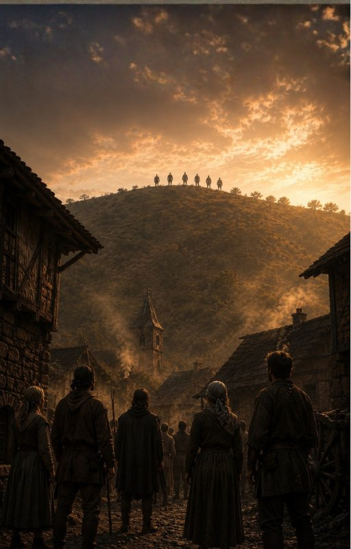
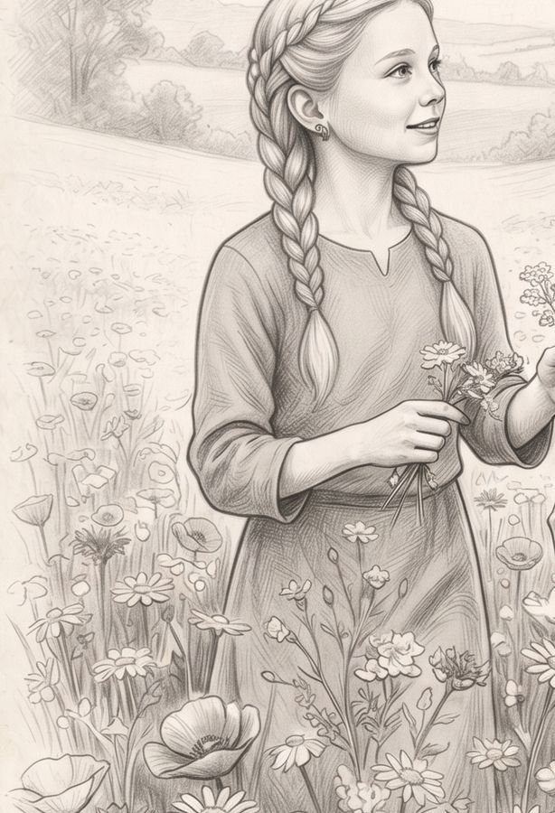
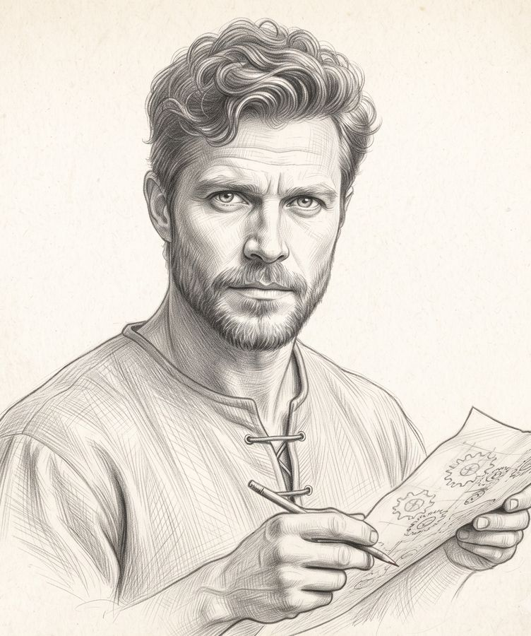
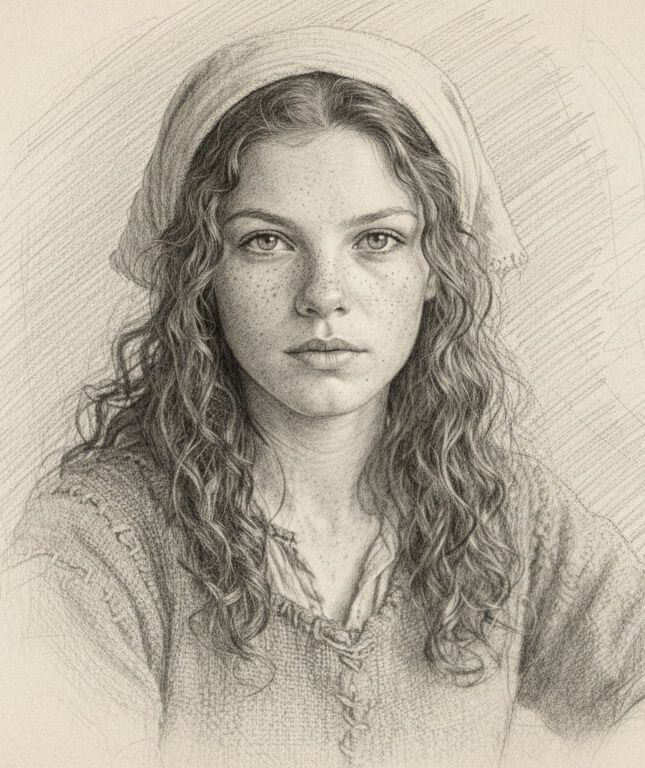
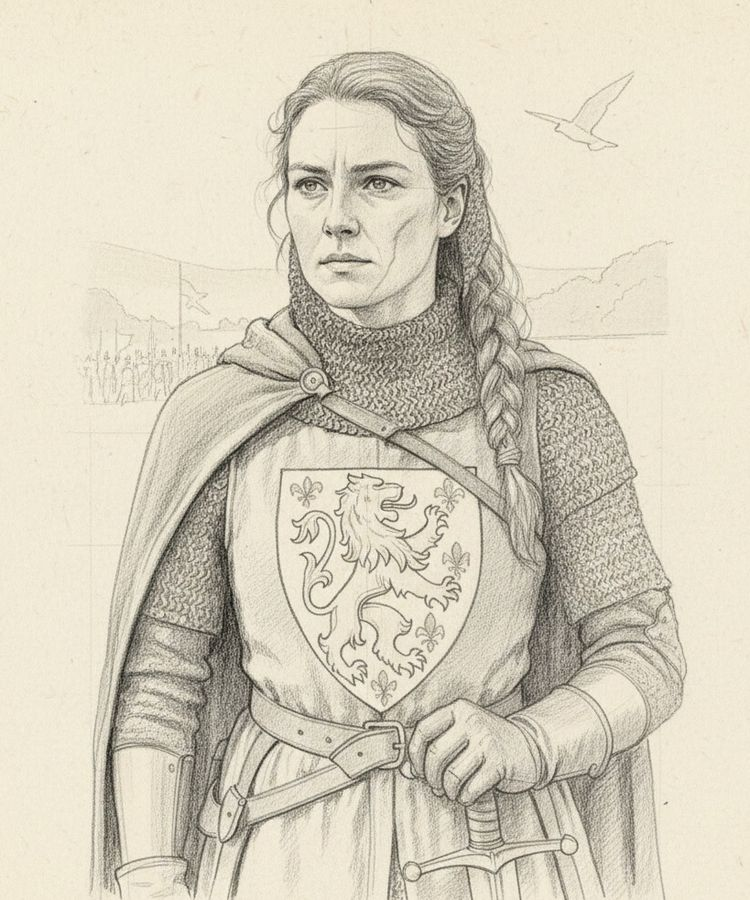
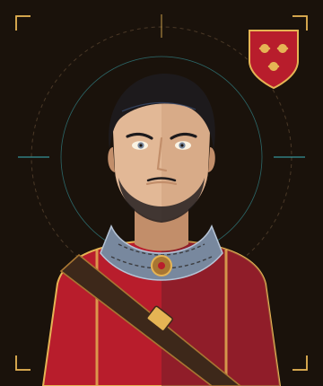

La saga · Exil 1135
Anna Chronique
Des voyageurs du XXIe siècle projetés dans le Périgord féodal de 1135. Personnages, lieux, histoire et vocabulaire : tout pour plonger dans l'univers.
-
01 · Le saut
De nos jours à 1135
Des voyageurs du XXIe siècle se retrouvent à Saint-Marcel, dans le Périgord du Moyen Âge. Ni réseau, ni lois modernes : seulement la pierre, le fer et la parole donnée.
-
02 · Le Périgord féodal
Une terre de lignages
D'un côté la Cité noble de Périgueux, de l'autre le bourg marchand du Puy-Saint-Front. Entre les deux, des vicomtes, des châtelaines et des chevaliers prêts à tout pour leur rang.
-
03 · Deux mondes
Voyageurs ou sorciers ?
Un lycéen, un ingénieur et leurs compagnons face à une noblesse qui voit dans leurs savoirs une menace. Chaque geste moderne peut devenir une accusation.
-
04 · La saga
Trois cycles, une même lignée
Exil 1135 en trois tomes, puis The Truth Seekers et Mathilde. La partie 1 du tome 1 est disponible dans plus de 1 000 librairies en Île-de-France.
Voir toute la bibliothèque



Et si vous tombiez au XIIe siècle, sans retour ?
Six silhouettes au sommet de la colline. En bas, un village du Périgord qui n'a jamais vu ça.
Les visages de 1135
Anne Dubois
Infirmière, pilier du groupe. Elle refuse la fatalité des fièvres et de la gangrène.
VoyageurJulien Dubois
17 ans, impétueux. Il devient écuyer-otage à Périgueux par amour pour Marie.

VoyageuseÉlise Dubois
Brillante et insolente, elle ouvre une école sous les chênes de Saint-Marcel.

VoyageurMaxime De Luca
L'ingénieur du groupe : filtre, éolienne, grand moulin de la Dronne…

Saint-MarcelMarie
Jeune serve et lavandière, à la mémoire poétique prodigieuse.

Saint-MarcelDame Isabelle
Châtelaine veuve, elle protège les voyageurs face à son beau-frère.

Maison de PérigueuxRaoul le Jeune
L'héritier aux Trois Lions, arrogant et jaloux des savoirs du futur.
Maison de PérigueuxLe vicomte Raoul
Seigneur de Périgueux, féodal retors et impitoyable.
Scènes de Saint-Marcel
Tout ce qu'il faut pour vivre en 1135
Lieux & Histoire
Château Barrière, Saint-Marcel, la Cité et le Puy-Saint-Front : la carte du roman et les vrais repères du XIIe siècle.
Ouvrir la carte → 02Dictionnaire
Haubert, bachelier, plaid, destrier… Tous les mots d'époque expliqués simplement, avec une recherche.
Ouvrir le dictionnaire → 03L'inventaire
La brouette, le télescope de cuivre, le carnet rose… et les objets du Moyen Âge expliqués en images.
Ouvrir l'inventaire → 04Le vlog de François
Ses anecdotes, en direct du XIIe siècle.
Voir les épisodes → 05La saga
Comment s'enchaînent Exil 1135, The Truth Seekers et Mathilde, et ce qui est déjà paru.
Voir l'ordre de lecture →Pas encore fini ?
Aucun spoiler.
Indique où tu en es : tout ce qui se passe après sera flouté sur le site. Réglage actuel : .
Exil 1135 · Tome 1, partie 1
Commencer l'aventure là où tout bascule.
Où acheter le livre